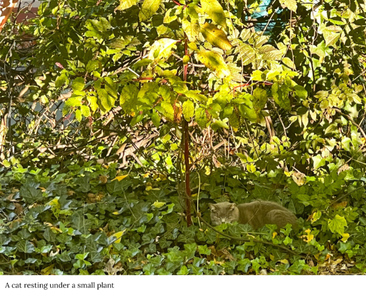
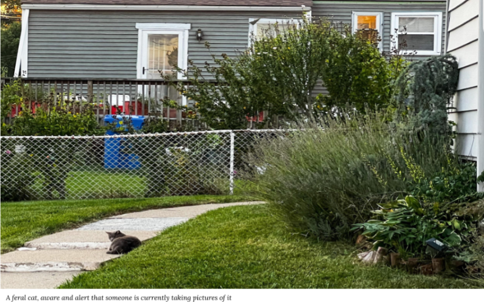
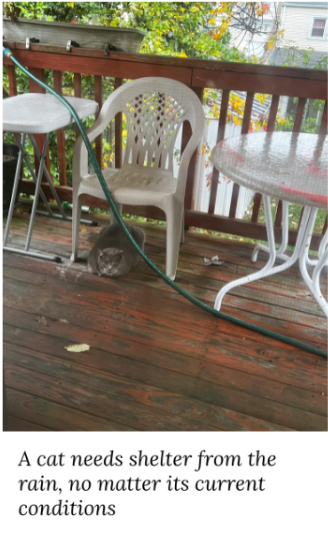
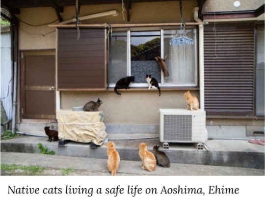
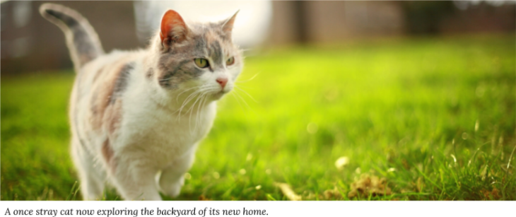

World Problems
Stray Cats and What We Could Do For Them
Author Jeremy Tolentino
To some people, stray cats could mean the band from the 1970s. To others, especially if you live in an urban or suburban area like me, then stray cats are the cats you see roughing it out in the wild. These little furballs go through a lot in comparison to house cats, but should we do something about these lost animals? Do we help them out in some sort of way or let nature take its course?
Ferals and Strays: The Same or Different Type of Cat?
Before we go into the topic of strays, there is one key point that should be known about stray cats: They are not the feral cats of the natural wild. The difference between a feral cat and a stray cat may not be apparent at first glance, but it becomes clear as day if you pay attention to how they behave around people.
A stray cat is one that is lost or was abandoned by its owner, so these cats act friendlier around humans. In some cases, strays depend on random human encounters to provide them with food and water. A feral cat is one that lives with no human interaction whatsoever, so these cats are naturally skittish around humans. Once they hear someone approaching them, they flee at a moment’s notice. This isn’t to say that all strays and ferals will act the same, however. All cats have differing personalities from each other, so some strays will flee from humans at first sight while some ferals will act more friendlier when someone approaches them.
Methods to Solving the Stray Problem
Now that we know the differences between these two types of wild cats, should we do something about them? With how little these cats know about surviving in the wild, they can become a threat to society, carrying diseases and fighting with the pet cats of other people’s homes. There have been steps taken towards dealing with these strays, but they can be inhumane to say the least. In most cases, the best solution is to outright remove them entirely. This means the use of euthanasia, which is already a heated topic for usage on people. We’re already unsure about doing this to our fellow person, so is it really okay to do the same on a lost, abandoned cat?
There is an alternative to this method that, thankfully, doesn’t involve the straight-up killing of cats. Programs known as trap-neuter-return programs simply take the cats and return them to the wild without their reproductive organs. This allows strays to remain in the wild without them reproducing, thus reducing the population of strays as a whole. However, this method is considered illegal in some countries, so this could be a good solution for some but it's unfortunately not the end-all answer some may be looking for.
With what little we can do to reduce the population of stray cats, is there anything we can do at all for these little fellas? They are roughing it out in this harsh world, just like any other animal, so maybe we could do something for them? In some places, these strays are taken in and given a new home and work to keep their place. For example, the bodegas of New York City are home to several bodega cats. A bodega cat is a cat that lives in a bodega, preventing rodents from infesting the shop. In some cases, the bodega cat is the owner’s cat, but these cats can also be the strays the owner has attracted into the shop and kept as a means for infestation prevention. Giving strays a working home like the bodega cats of NYC could be an answer to our problems.
There is also the potential for the relocation of strays. If we literally cannot do anything to the stray cats, then why not move them to a safer environment? This could be as simple as taking a stray you see and moving it to a safer environment, like an animal shelter, or something more intuitive like the Cat Island of Japan. The fishermen on the island of Aoshima in Japan followed a similar approach and took strays over with the initial idea of lowering rodent populations. This island also had no predators, so Aoshima would eventually become the popular tourist attraction known as cat island, where the ratio of cats to humans has gone as high as 36 to 1 (this means that there are 36 cats for every 1 human). Relocating strays to a much safer environment can give them a better chance to survive and even serves as a tourist attraction for the public, so maybe relocation could be the answer for our lost friends.
Of course, this isn’t to say that we should take measures to the same extremes as what was listed. For example, we don’t need to go as far with relocation as moving them to another island. Instead, we should simply relocate the strays we find and move them to a more safe and local environment, like a local animal shelter or pet adoption center. Nonetheless, we should give a helping hand to these once happy pets and give them a home to be happy in once again.
